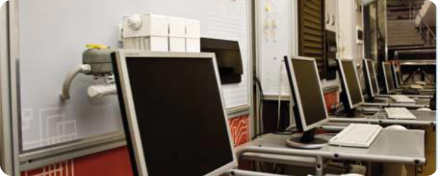

История
Сотрудники
Конференции
Введение
История старейшей кафедры университета "Системное моделирование и инженерная графика" ведет отсчет с 1940 года. За это время в аудиториях и лабораториях кафедры было подготовлено более 10 000 специалистов различных областей науки и техники.

Сегодня научные работы кафедры ведутся по следующим направлениям: «Разработка программного обеспечения, электронных коммуникационных устройств», «Проектирование баз данных, и структурированных кабельных систем», «Создание интегрированных информационных комплексов», «Геометрическое, твердотельное параметрическое и поверхностное моделирование сложных систем и изделий». Научная деятельность кафедры заслужила высокую оценку международных выставках, конференциях и симпозиумах.
В процессе обучения на кафедре студенты овладевают современными, широко используемыми IT-технологиями: Oracle Database, ОС Unix (Linux, FreeBSD), WEB- инструментами RUBY/PHP/HTML, языком программирования Java, прикладными программами компании Microsoft и 1C-Бухгалтерия, а также специальными средствами разработки аппаратного обеспечения: Microchip Technology Inc. и ARM-платформы.
Истоки и становление
Кафедра — ровесник МАТИ. В 1940 г. ее возглавил к. т. н., доцент Александр Игнатьевич Погумирский. Кафедра была немногочисленной, состояла из трех доцентов, пяти старших преподавателей и двух ассистентов. На кафедре читались курсы начертательной геометрии и черчения в течение 4-х семестров, активно велась учебно-воспитательная и методическая работа. Сам руководитель кафедры был настоящим геометром, любил свой предмет и неустанно пропагандировал его. Он отлично читал лекции, обладал художественным талантом и пользовался заслуженным авторитетом среди преподавателей. Погумирский вел практические занятия по начертательной геометрии и машиностроительному черчению, написал ряд методических разработок.

С 1976 г. кафедра ведет занятия на ФПК для преподавателей вузов страны. В те годы коллектив кафедры участвовал в разработке госбюджетных и хоздоговорных тем по четырем направлениям «Совершенствование учебного процесса», «Конструирование поверхностей сложных технических форм», «Математическое обеспечение геометрических поверхностей технических устройств», «САПР сложных технических форм». Была проведена огромная работа, опыт и результаты которой стали использоваться в учебном процессе.
Советская наука и прогресс
С результатами научно-исследовательских разработок сотрудники участвовали в международных и всесоюзных научно-исследовательских конференциях и выставках: Всесоюзных Гагаринских чтениях; Королевских чтениях; чтениях К.Э. Циолковского днях науки на ВДНХ различных выставках на ВДНХ; различных отраслевых и Вузовских НТК. За этот период преподаватели кафедры получили 15 авторских свидетельств на изобретения, 4 медали ВДНХ СССР несколько медалей Академии наук «За достижения в науке» опубликовано много научно-исследовательских и методических материалов.
При кафедре ежегодно заканчивали ФПКП или стажировались свыше 70 преподавателей других вузов страны, этот факультет был ориентирован на повышение квалификации преподавателей в области использования средств вычислительной техники при решении задач начертательной геометрии и инженерной графики. В то же время преподаватели кафедры проходили обучение на ФПК при МАИ, МВТУ и других ведущих вузах страны.

К научно-исследовательской работе активно привлекались студенты, работа которых велась по следующим направлениям: геометрические и деформационные задачи САПР. Студенты и аспиранты получили возможность проведения сложных математических расчетов в более короткие сроки с помощью нового оборудования, что позволило, внедрять свои достижения сотрудниками кафедры в реальные объекты. Также в 1980-е годы студенты занимались научной работой в рамках студенческого научно-технического общества и студенческого конструкторско-технологического бюро «Графит». Они выступали с докладами на конференциях, на заседаниях кружка, на студенческих Гагаринских чтениях занимались изобретательскими разработками. В это же время проводились ежегодные внутривузовские и городские олимпиады по начертательной геометрии, в которых студенты кафедры активно принимали участие.
Цифровой переход
С начала 1990-х годов вычислительные мощности кафедры постоянно увеличивались. В 1995 году студенты и аспиранты получили возможность работать на графических станциях компании IBM на базе передовых технологий Risc, PowerPC. В 1997 году появился современный компьютерный класс на базе ЭВМ IBM PC. Следуя в ногу со временем и быстрым развитием компьютерных технологий, техника на кафедре постоянно обновлялась и совершенствовалась. Учебная и научно-исследовательская деятельность кафедры базировалась на современных технологиях CATIA, которые даже сейчас занимают лидирующие позиции среди САПР. Параллельно с развитием сетевых технологий ЭВМ кафедры были интегрированы в общеуниверситетскую корпоративную сеть. В результате удалось построить собственный вычислительный центр с современными серверными станциями.
В 1996 г. кафедра стала выпускающей и провела первый набор группы студентов на 1 курс, эти студенты успешно защитили дипломные проекты в 2002 г., а кафедрой уже осуществлен выпуск 5 групп студентов. При защите дипломного проекта требуется тщательное оформление документации, тщательная подготовка графического материала, по-разному могут вести себя студенты перед защитой.
В ноябре 2003 года кафедрой была организована и успешно проведена Межвузовская научно-техническая конференция «Прикладные вопросы компьютерной графики в авиастроении», в которой приняли участие представители НИЦ АСК, МГУ им. М.В. Ломоносова, АО «ТОП-Системы», МИРЭА ТУ, МАИ ГТУ, ВВИА им. Н.Е. Жуковского, представители Malek Ashtar University of Technology (IRAN), ОАО им. С.В. Ильюшина и других организаций.
Кафедра активно участвует в студенческих Гагаринских чтениях. В 2003 году в рамках студенческих Гагаринских чтений кафедра организовала свою секцию «Инженерная компьютерная графика», в заседании которой принимали участие не только студенты МАТИ, но и других инженерно-технических вузов Москвы и Московской области.
Цифровой переход
В настоящее время возглавляет кафедру «Системное моделирование и инженерная графика» профессор, к.т.н. Хорошко Леонид Леонидович. На кафедре работают 3 профессора, 6 доцентов, 3 старших преподавателя, 3 преподавателя. Кафедра входит в состав Института 3 и является выпускающей по направлениям 090301 (бакалавр) и 090401 (магистр) «Информатика и вычислительная техника».
Сегодня научные работы кафедры ведутся по следующим направлениям: «Разработка программного обеспечения, электронных коммуникационных устройств», «Проектирование баз данных, и структурированных кабельных систем», «Создание интегрированных информационных комплексов», «Геометрическое, твердотельное параметрическое и поверхностное моделирование сложных систем и изделий». Научная деятельность кафедры заслужила высокую оценку международных выставках, конференциях и симпозиумах.